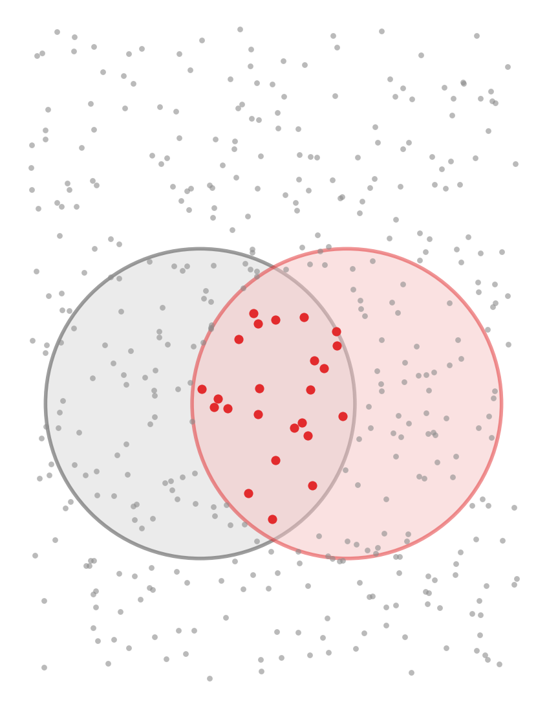
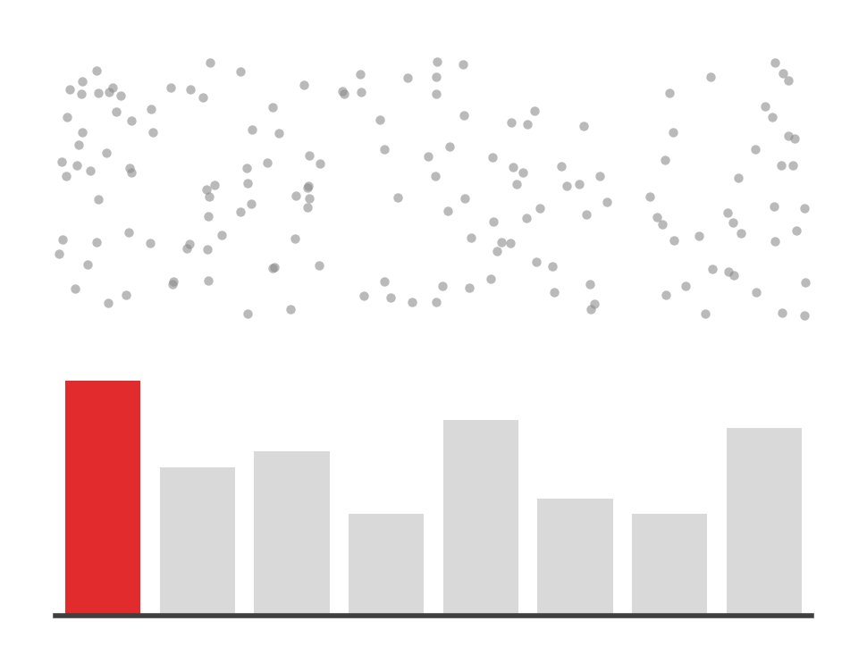
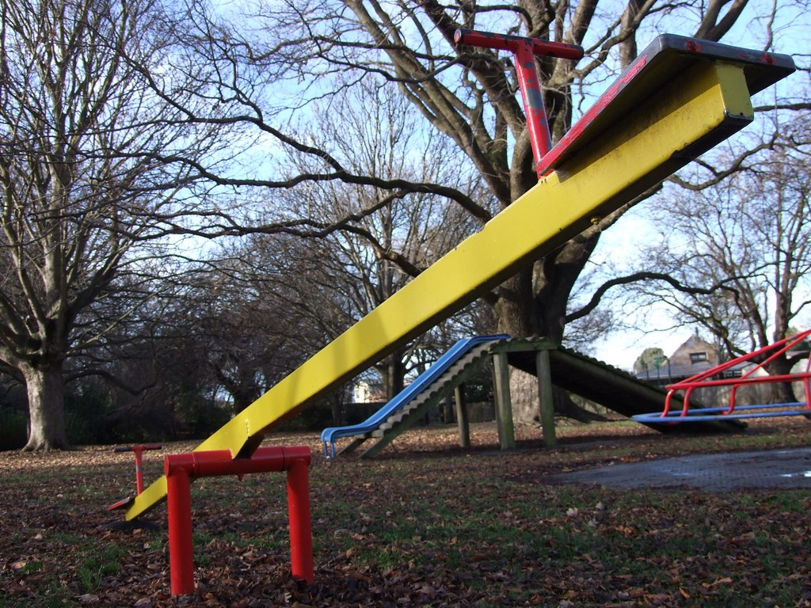

01
데이톨로지 — 데이터로 읽는 인간과 사회
주교재: 김성태, 『데이톨로지』, 이른비, 2022 · 강사 : ○○○

CONTENTS

목표 1
데이톨로지의 뜻과 “데이터는 과학과 인문학 모두에 속함”의 의미 설명
목표 2
데이터 시대의 기대와 불안을 사례로 말하기
오늘의 질문
오늘 아침부터 지금까지
내가 남긴 데이터는 몇 개?
데이터 때문에 내린 결정은 몇 개?
[비유] 쌍안경
사진: Dana Beveridge / CC BY 2.0
데이톨로지(Datalogy) = data + -logy, 데이터로 세상을 읽는 공부
책과 저자
“데이터는 과학과 인문학의
영역에 모두 속한다.”김성태, 『데이톨로지』 p.7
[비유] 정유 공장
사진: ljmacphee / CC BY 2.0
저자의 데이터 재정의: 자료 + 분석해서 가치를 찾는 과정
[비유] 모래 위 발자국
사진: Public Domain Photos / CC BY 2.0
24시간 동안 쌓이는 데이터: 원해서 / 모르고 / 돌아온 것
활동 (60분): 나의 하루 데이터 발자국 그리기
STEP 1 · 개인 15분
STEP 2 · 짝 15분
STEP 3 · 전체 30분
[비유] 시소

사진: nzgabriel / CC BY 2.0
낙관과 비관 사이에서 접점 찾기
기술보다 먼저: 인간의 한계 인정
굽은 나무에서 곧은 재목 불가
→ 인간에게서 완전무결 기대 불가
인간은 인간의 맥락을 뛰어넘는 존재
→ 모든 인간을 품는 기술·제도는 불가
관념/경험 · 자연/인간 · 이성/감정 · 객관/주관 — 한쪽만 옳다는 주장 경계
과거 → 현재 → 미래, 15주 여정
1부 · 과거 · 2~7주
2부 · 현재 · 9~13주
3부 · 미래 · 14~15주
15주 내내 돌아올 질문 3가지
01
02
03
오늘의 핵심 4줄
데이톨로지 = 데이터로 세상을 읽는 공부
데이터 = 과학 ∩ 인문학, 자료 + 분석 과정
데이터 발자국 = 원해서 / 모르고 / 돌아온 것
태도 = 낙관과 비관 사이의 아름다운 거리
확인 문제
저자가 데이터를 바라볼 때 함께 쓰는 두 관점과, 각 관점이 데이터를 보는 방식
1861년 김정호의 『대동여지도』를 “데이터”라고 부를 수 있는 이유
“2030년까지 현재 직업의 약 1/3이 AI로 대체” 전망을 들었을 때, 저자가 권하는 태도
마무리
데이터에서 길을 찾다 — 김정호와 매튜 머리
사진 (Openverse 검색, CC 라이선스)